pkgs <- c(
"readr","dplyr","tidyr","tibble","purrr",
"ggplot2","mgcv","pracma","pheatmap",
"lme4","lmerTest","emmeans","multcompView",
"cowplot","ggrepel","ggdendro","patchwork",
"DHARMa","stringr","glue"
)
to_install <- pkgs[!pkgs %in% rownames(installed.packages())]
if(length(to_install) > 0) install.packages(to_install, dependencies = TRUE)
library(readr)
library(dplyr)
library(tidyr)
library(tibble)
library(purrr)
library(ggplot2)
library(mgcv)
library(pracma)
library(pheatmap)
library(lme4)
library(lmerTest)
library(emmeans)
library(multcompView)
library(cowplot)
library(ggrepel)
library(ggdendro)
library(patchwork)
library(DHARMa)
library(stringr)
library(glue)
theme_set(theme_classic(base_size = 14))Curve-based + traditional analysis of Bipolaris epidemics
Functional (beta-GAM/HGAM) smoothing, functional distances, and AUDPC mixed-model comparison
1 Overview
This document implements two complementary analyses for Bipolaris leaf spot epidemics assessed in maize hybrids:
A. Functional (curve-based) analysis
- Beta-GAM (HGAM) to smooth severity trajectories and adjust for environment.
- Environment-adjusted hybrid mean curves.
- Functional distance among hybrids and hierarchical clustering (dendrogram + curve panel).
- “Killer pair” figure: two curves that are scalar-equivalent (AUDPC + final severity) but trajectory-distinct, with the difference function \(\Delta(t)\) and its contribution to the \(L^2\) distance.
B. Traditional (scalar) analysis
- AUDPC per hybrid within environment (as available in the dataset design).
- Mixed-model ANOVA and Tukey letter groups (via
emmeans::cld()). - Merge Tukey groups with functional clusters for side-by-side comparison.
2 Data and design
- Input file:
maize_bipolaris.csv - Response: Bipolaris severity (%) converted to proportion
- Time scale: DAE (days after emergence)
- Design columns:
Ambiente(environment),Hibrido(hybrid),Parcela(plot/block)
3 Methods (equations)
3.1 Response scale and beta regression constraints
The raw severity in percent is converted to a proportion:
\[ y = \frac{\text{severity (\%)}}{100}. \]
Beta regression requires \(0 < y < 1\), so we apply a small boundary adjustment:
\[ y^* = \min\left(\max(y, \varepsilon), 1-\varepsilon\right). \]
3.2 AUDPC
AUDPC is approximated using the trapezoidal rule for a curve \(y(t)\) observed at times \(t_1 < \dots < t_m\):
\[ \mathrm{AUDPC} \approx \sum_{i=1}^{m-1} \frac{(y_i + y_{i+1})}{2}\,(t_{i+1}-t_i). \]
3.3 \(T_{50}\)
\(T_{50}\) is computed as the time when the curve reaches half its observed maximum:
\[ T_{50}=\min\{t:\; y(t)\ge 0.5\,y_{\max}\}, \]
estimated by linear interpolation between adjacent observation times.
3.4 Logistic rate (optional scalar)
We fit a logistic curve to each epidemic trajectory:
\[ y(t)=\frac{K}{1 + \exp\{-r(t-t_0)\}}, \]
and report a duration-normalized rate:
\[ r_{\mathrm{norm}} = r\,(t_{\max}-t_{\min}). \]
3.5 Functional distance between curves
For two smooth mean curves \(\mu_a(t)\) and \(\mu_b(t)\), the \(L^2\) distance is:
\[ d_F(a,b) = \left(\int \big[\mu_a(t)-\mu_b(t)\big]^2\,dt\right)^{1/2}. \]
On an evenly spaced grid with step \(\Delta t\), we approximate:
\[ d_F(a,b)\approx \left(\sum_{j} [\mu_a(t_j)-\mu_b(t_j)]^2\,\Delta t\right)^{1/2}. \]
4 Setup
4.1 Packages
4.2 User settings
file_path <- "maize_bipolaris.csv"
# Data window (as in your script)
dae_min <- 20
dae_max <- 116
# Minimum number of assessments per curve_id to retain
# NOTE: your header comment said 8, but the code used 5. Keep as a parameter here.
min_assess <- 5
# Beta boundary adjustment
eps <- 1e-4
# Functional clustering
k_clusters <- 4
# Time grid for functional distances / plots
grid_n <- 140
# Reference environment used for "environment-adjusted" mean curves
# (your original code used the first level; keep that default)5 Read and prepare data
dat0 <- read_csv(file_path, show_col_types = FALSE)
dat0 <- dat0 |>
filter(DAE < dae_max, DAE > dae_min)
# Expected columns: Ambiente, Hibrido, Parcela, DAE, Bipolaris
dat <- dat0 %>%
transmute(
Ambiente = factor(Ambiente),
Hibrido = factor(Hibrido),
DAE = as.numeric(DAE),
bipolaris = as.numeric(Bipolaris) / 100 # % -> proportion
) %>%
filter(!is.na(Ambiente), !is.na(Hibrido),
!is.na(DAE), !is.na(bipolaris)) %>%
mutate(
curve_id = interaction(Ambiente, Hibrido), drop = TRUE, sep = "|") %>%
arrange(curve_id, DAE)
# Retain curves with at least min_assess time points
curve_n <- dat %>% count(curve_id, name = "n_assess")
dat <- dat %>%
left_join(curve_n, by = "curve_id") %>%
filter(n_assess >= min_assess) %>%
select(-n_assess)
# Beta regression requires 0 < y < 1
dat <- dat %>%
mutate(y = pmin(pmax(bipolaris, eps), 1 - eps))
message("Rows: ", nrow(dat),
" | curves: ", n_distinct(dat$curve_id),
" | hybrids: ", n_distinct(dat$Hibrido),
" | envs: ", n_distinct(dat$Ambiente))5.1 Optional: join hybrid resistance class
bipolaris_df <- data.frame(
Hibrido = c(
"AG 8701 PRO4","AG 8707 PRO4","AG 9021 PRO3","AS 1757 PRO4","AS 1868 PRO4",
"AS 1955 PRO4","B 2801 PWU","CRWX03","DKB 230 PRO3","DKB 242 PRO4",
"MG 616 PWU","P 3016 VYHR","T 1503 PWU"
),
resistance = c("MR","MR","MR","MR","R","MR","MR","R","MR","MR","MR","R","MR"),
stringsAsFactors = FALSE
)
dat <- dat %>%
left_join(bipolaris_df, by = "Hibrido") %>%
transmute(
y = as.numeric(y),
DAE = as.numeric(DAE),
Ambiente = factor(Ambiente),
Hibrido = factor(Hibrido),
curve_id = factor(curve_id),
resistance = factor(resistance)
) %>%
as.data.frame()
str(dat)'data.frame': 885 obs. of 6 variables:
$ y : num 0.0001 0.03 0.035 0.035 0.065 0.15 0.2 0.25 0.25 0.25 ...
$ DAE : num 49 54 62 68 78 84 90 97 103 109 ...
$ Ambiente : Factor w/ 6 levels "2024_Arapoti_Cedo",..: 1 1 1 1 1 1 1 1 1 1 ...
$ Hibrido : Factor w/ 13 levels "AG 8701 PRO4",..: 1 1 1 1 1 1 1 1 1 1 ...
$ curve_id : Factor w/ 74 levels "2024_Arapoti_Cedo.AG 8701 PRO4",..: 1 1 1 1 1 1 1 1 1 1 ...
$ resistance: Factor w/ 2 levels "MR","R": 1 1 1 1 1 1 1 1 1 1 ...dat |>
group_by(Ambiente) |>
count(DAE)# A tibble: 71 × 3
# Groups: Ambiente [6]
Ambiente DAE n
<fct> <dbl> <int>
1 2024_Arapoti_Cedo 49 11
2 2024_Arapoti_Cedo 54 11
3 2024_Arapoti_Cedo 62 11
4 2024_Arapoti_Cedo 68 11
5 2024_Arapoti_Cedo 78 11
6 2024_Arapoti_Cedo 84 11
7 2024_Arapoti_Cedo 90 11
8 2024_Arapoti_Cedo 97 11
9 2024_Arapoti_Cedo 103 11
10 2024_Arapoti_Cedo 109 11
# ℹ 61 more rows6 Helper functions (scalars)
# T50: time when y reaches 0.5*ymax (linear interpolation)
t50_interp <- function(time, y){
o <- order(time)
time <- time[o]; y <- y[o]
ymax <- max(y, na.rm = TRUE)
thr <- 0.5 * ymax
if(all(y < thr, na.rm = TRUE)) return(NA_real_)
k <- which(y >= thr)[1]
if(k == 1) return(time[1])
t1 <- time[k-1]; t2 <- time[k]
y1 <- y[k-1]; y2 <- y[k]
if(isTRUE(all.equal(y2, y1))) return(t2)
t1 + (thr - y1) * (t2 - t1) / (y2 - y1)
}
# Logistic fit: y(t)=K/(1+exp(-r(t-t0))) and r_norm = r*(tmax-tmin)
logistic_fit_rate <- function(time, y){
o <- order(time)
time <- time[o]; y <- y[o]
y <- pmin(pmax(y, 1e-4), 1 - 1e-4)
K0 <- max(y)
d <- diff(y)
t00 <- if(length(d) > 0 && any(is.finite(d))) time[which.max(d) + 1] else median(time)
if(is.na(t00)) t00 <- median(time)
r0 <- 0.1
f <- tryCatch(
nls(
y ~ K / (1 + exp(-r * (time - t0))),
start = list(K = K0, r = r0, t0 = t00),
control = nls.control(maxiter = 200, warnOnly = TRUE)
),
error = function(e) NULL
)
if(is.null(f)) return(tibble(r = NA_real_, K = NA_real_, t0 = NA_real_, r_norm = NA_real_))
co <- coef(f)
r <- unname(co["r"])
K <- unname(co["K"])
t0 <- unname(co["t0"])
dur <- max(time) - min(time)
tibble(r = r, K = K, t0 = t0, r_norm = r * dur)
}7 Per-curve scalar metrics (AUDPC, final, T50, r_norm)
curve_stats <- dat %>%
group_by(curve_id, Ambiente, Hibrido) %>%
summarise(
AUDPC = pracma::trapz(DAE, y),
final_sev = y[which.max(DAE)],
T50 = t50_interp(DAE, y),
.groups = "drop"
)
rate_df <- map_dfr(unique(curve_stats$curve_id), function(cid){
df <- dat %>% filter(curve_id == cid)
logistic_fit_rate(df$DAE, df$y) %>% mutate(curve_id = as.character(cid))
})
curve_stats <- curve_stats %>%
mutate(curve_id = as.character(curve_id)) %>%
left_join(rate_df, by = "curve_id") %>%
filter(is.finite(T50), is.finite(r_norm))
message("Curves with all scalar metrics: ", nrow(curve_stats))8 Hierarchical beta-GAM (HGAM) for smoothing and adjustment
Model specification (as in your script):
- \(s(\mathrm{DAE})\) global mean epidemic shape
- \(s(\mathrm{DAE}, \mathrm{Ambiente}, \mathrm{bs}=\mathrm{fs})\) environment-specific deviation (random smooth)
- \(s(\mathrm{DAE}, \mathrm{Hibrido}, \mathrm{bs}=\mathrm{fs})\) hybrid-specific deviation (random smooth)
- \(s(\mathrm{curve\_id}, \mathrm{bs}=\mathrm{re})\) curve-level random intercept
set.seed(1)
m_gam <- mgcv::bam(
y ~ s(DAE, k = 10) +
s(DAE, Ambiente, bs = "fs", k = 4, m = 1) +
s(DAE, Hibrido, bs = "fs", k = 4, m = 1) +
s(curve_id, bs = "re"),
family = mgcv::betar(link = "logit"),
data = dat,
method = "fREML",
discrete = TRUE,
gamma = 1.4,
select = TRUE
)
mgcv::gam.check(m_gam)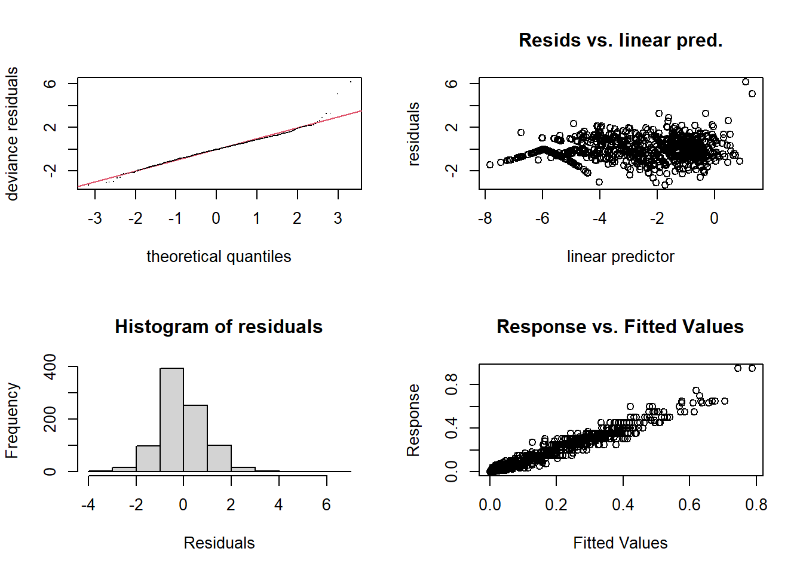
Method: fREML Optimizer: perf chol
$grad
[1] 0.016081435 0.003210994 0.030423438 0.010187219 0.078692914 0.022287793
[7] 0.082631448
$hess
[,1] [,2] [,3] [,4] [,5] [,6]
[1,] 1.77529854 0.098828686 0.07600351 -0.026788931 -0.03057700 -0.017292515
[2,] 0.09882869 0.451087893 -0.02484861 -0.007170195 0.00848747 -0.004382001
[3,] 0.07600351 -0.024848613 5.47833549 -0.194357458 -0.03010905 -0.010764192
[4,] -0.02678893 -0.007170195 -0.19435746 2.262016363 -0.01662864 -0.049631277
[5,] -0.03057700 0.008487470 -0.03010905 -0.016628635 8.94699448 -0.040648829
[6,] -0.01729251 -0.004382001 -0.01076419 -0.049631277 -0.04064883 4.432210980
[7,] -0.01131773 -0.002160372 -0.06791368 0.104652002 -0.10163246 0.532111905
[,7]
[1,] -0.011317732
[2,] -0.002160372
[3,] -0.067913683
[4,] 0.104652002
[5,] -0.101632464
[6,] 0.532111905
[7,] 22.373931183
Model rank = 160 / 160
Basis dimension (k) checking results. Low p-value (k-index<1) may
indicate that k is too low, especially if edf is close to k'.
k' edf k-index p-value
s(DAE) 9.00 5.92 1.08 0.99
s(DAE,Ambiente) 24.00 17.46 1.08 0.98
s(DAE,Hibrido) 52.00 33.61 1.08 0.99
s(curve_id) 74.00 51.10 NA NAAIC(m_gam)[1] -4425.56summary(m_gam)
Family: Beta regression(84.608)
Link function: logit
Formula:
y ~ s(DAE, k = 10) + s(DAE, Ambiente, bs = "fs", k = 4, m = 1) +
s(DAE, Hibrido, bs = "fs", k = 4, m = 1) + s(curve_id, bs = "re")
Parametric coefficients:
Estimate Std. Error t value Pr(>|t|)
(Intercept) -2.7527 0.2068 -13.31 <2e-16 ***
---
Signif. codes: 0 '***' 0.001 '**' 0.01 '*' 0.05 '.' 0.1 ' ' 1
Approximate significance of smooth terms:
edf Ref.df F p-value
s(DAE) 5.924 9 43.99 <2e-16 ***
s(DAE,Ambiente) 17.457 23 267.46 0.981
s(DAE,Hibrido) 33.614 52 816.51 0.998
s(curve_id) 51.097 73 16.33 <2e-16 ***
---
Signif. codes: 0 '***' 0.001 '**' 0.01 '*' 0.05 '.' 0.1 ' ' 1
R-sq.(adj) = 0.948 Deviance explained = 97.7%
fREML = -865.48 Scale est. = 1 n = 8858.1 Diagnostics (observed vs fitted and residuals)
dat$mu_hat <- predict(m_gam, type = "response")
ggplot(dat, aes(mu_hat, y)) +
geom_point(alpha = 0.3) +
geom_abline(slope = 1, intercept = 0, linetype = "dashed") +
labs(x = "Fitted", y = "Observed")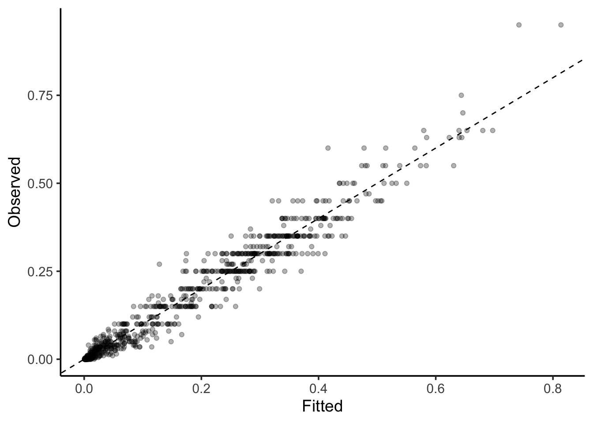
res <- residuals(m_gam, type = "pearson")
plot(dat$DAE, res)
abline(h = 0, lty = 2)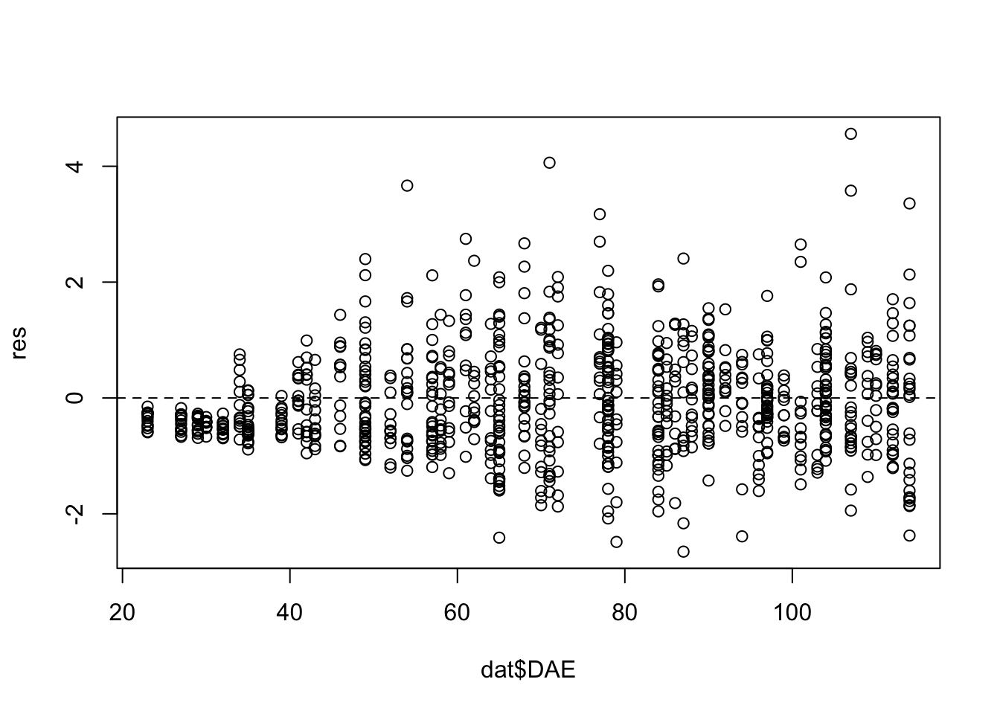
9 Environment-adjusted hybrid mean curves
We obtain hybrid mean curves on a regular grid excluding:
- the environment random smooth term
s(DAE,Ambiente) - the curve random intercept
s(curve_id)
so each hybrid is represented at a chosen reference environment level.
t_grid <- seq(min(dat$DAE), max(dat$DAE), length.out = grid_n)
env_ref <- levels(dat$Ambiente)[1]
cultivars <- levels(dat$Hibrido)
pred_cult <- map_dfr(cultivars, function(cv){
newd <- tibble(
DAE = t_grid,
Ambiente = factor(env_ref, levels = levels(dat$Ambiente)),
Hibrido = factor(cv, levels = levels(dat$Hibrido)),
curve_id = dat$curve_id[1] # dummy; excluded below
)
mu <- predict(
m_gam, newdata = newd, type = "response",
exclude = c("s(DAE,Ambiente)", "s(curve_id)")
)
tibble(Hibrido = cv, DAE = t_grid, mu = as.numeric(mu))
})
cult_score <- pred_cult %>%
group_by(Hibrido) %>%
summarise(mean_mu = mean(mu), .groups = "drop") %>%
arrange(mean_mu)
cult_score# A tibble: 13 × 2
Hibrido mean_mu
<chr> <dbl>
1 P 3016 VYHR 0.0923
2 CRWX03 0.0933
3 MG 616 PWU 0.114
4 AS 1868 PRO4 0.115
5 T 1503 PWU 0.118
6 AG 8701 PRO4 0.124
7 B 2801 PWU 0.128
8 AG 9021 PRO3 0.133
9 DKB 230 PRO3 0.146
10 DKB 242 PRO4 0.154
11 AS 1955 PRO4 0.162
12 AS 1757 PRO4 0.188
13 AG 8707 PRO4 0.192 10 Functional distance among hybrids + clustering
10.1 Utility: shorten hybrid labels
shorten_hybrid <- function(x) {
x <- gsub(" PRO[0-9]+| PWU| VYHR", "", x)
x <- gsub(" ", "", x)
x
}10.2 Build distance matrix and cluster
# Wide matrix: rows = time, cols = hybrid
mat <- pred_cult %>%
select(DAE, Hibrido, mu) %>%
pivot_wider(names_from = Hibrido, values_from = mu) %>%
arrange(DAE)
dt_grid <- mean(diff(mat$DAE))
matX <- mat %>%
select(-DAE) %>%
as.matrix()
# Functional L2 distance (grid approximation)
D_cult <- as.matrix(dist(t(matX), method = "euclidean")) * sqrt(dt_grid)
hc <- hclust(as.dist(D_cult), method = "ward.D2")
cl_raw <- cutree(hc, k = k_clusters)
# Order clusters by mean severity (from cult_score)
cluster_rank_map <- tibble(Hibrido = names(cl_raw),
cluster_raw = as.integer(cl_raw)) %>%
left_join(cult_score %>% select(Hibrido, mean_mu), by = "Hibrido") %>%
group_by(cluster_raw) %>%
summarise(cluster_mean = mean(mean_mu, na.rm = TRUE), .groups = "drop") %>%
arrange(cluster_mean) %>%
mutate(cluster = row_number()) %>%
select(cluster_raw, cluster)
cluster_table2 <- tibble(Hibrido = names(cl_raw),
cluster_raw = as.integer(cl_raw)) %>%
left_join(cluster_rank_map, by = "cluster_raw") %>%
left_join(cult_score %>% select(Hibrido, mean_mu), by = "Hibrido") %>%
mutate(
phenotype = factor(cluster,
levels = 1:k_clusters,
labels = paste0("P", 1:k_clusters))
)
cluster_table2# A tibble: 13 × 5
Hibrido cluster_raw cluster mean_mu phenotype
<chr> <int> <int> <dbl> <fct>
1 AG 8701 PRO4 1 2 0.124 P2
2 AG 8707 PRO4 2 4 0.192 P4
3 AG 9021 PRO3 1 2 0.133 P2
4 AS 1757 PRO4 2 4 0.188 P4
5 AS 1868 PRO4 1 2 0.115 P2
6 AS 1955 PRO4 3 3 0.162 P3
7 B 2801 PWU 1 2 0.128 P2
8 CRWX03 4 1 0.0933 P1
9 DKB 230 PRO3 1 2 0.146 P2
10 DKB 242 PRO4 3 3 0.154 P3
11 MG 616 PWU 1 2 0.114 P2
12 P 3016 VYHR 4 1 0.0923 P1
13 T 1503 PWU 1 2 0.118 P2 10.3 Figure: mean curves by phenotype + dendrogram
cols <- c("#D55E00", "#0072B2", "#009E73", "#CC79A7")[1:k_clusters]
phen_cols <- setNames(cols, levels(cluster_table2$phenotype))
pred_cult2 <- pred_cult %>%
left_join(cluster_table2 %>% select(Hibrido, phenotype), by = "Hibrido") %>%
mutate(hybrid_short = shorten_hybrid(Hibrido))
pred_cult2 <- left_join(pred_cult2, bipolaris_df)
label_df <- pred_cult2 %>%
group_by(Hibrido) %>%
filter(DAE == max(DAE, na.rm = TRUE)) %>%
ungroup()
p_hibridos <- ggplot(pred_cult2,
aes(x = DAE, y = mu, group = Hibrido, linetype = resistance, color = phenotype)) +
geom_line(linewidth = 1.1, alpha = 0.95) +
ggrepel::geom_text_repel(
data = label_df,
aes(label = hybrid_short),
hjust = 0, direction = "y",
nudge_x = 2,
size = 2.8,
show.legend = FALSE,
segment.size = 0.2,
segment.alpha = 0.6
) +
expand_limits(x = max(pred_cult2$DAE, na.rm = TRUE) + 8) +
scale_color_manual(values = phen_cols, drop = FALSE) +
labs(x = "Days after emergence (DAE)",
y = "Environment-adjusted mean severity",
color = "Phenotype", linetype = "Resistance") +
theme(legend.position = "bottom")
ddata <- ggdendro::dendro_data(as.dendrogram(hc), type = "rectangle")
lab_map <- cluster_table2 %>%
mutate(label = Hibrido,
label_short = shorten_hybrid(Hibrido),
lab_col = phen_cols[as.character(phenotype)]) %>%
select(label, label_short, lab_col)
lab_df <- ddata$labels %>%
left_join(lab_map, by = c("label" = "label")) %>%
mutate(label_short = ifelse(is.na(label_short), shorten_hybrid(label), label_short))
p_dend <- ggplot() +
geom_segment(data = ddata$segments,
aes(x = x, y = y, xend = xend, yend = yend),
linewidth = 0.45) +
geom_text(data = lab_df,
aes(x = x, y = y - 0.02 * max(ddata$segments$y),
label = label_short, color = I(lab_col)),
angle = 90, hjust = 1, size = 3) +
labs(x = NULL, y = "Functional distance") +
theme_classic(base_size = 14) +
theme(axis.line.x = element_blank(),
axis.ticks.x = element_blank(),
axis.text.x = element_blank()) +
coord_cartesian(clip = "off") +
theme(plot.margin = margin(t = 5.5, r = 5.5, b = 18, l = 5.5))
h_cut <- hc$height[length(hc$height) - (k_clusters - 1)]
p_dend <- p_dend +
geom_hline(yintercept = h_cut, linetype = "dashed",
linewidth = 0.5, color = "grey30")
fig_final <- (p_hibridos | p_dend) + plot_annotation(tag_levels = "A")
fig_final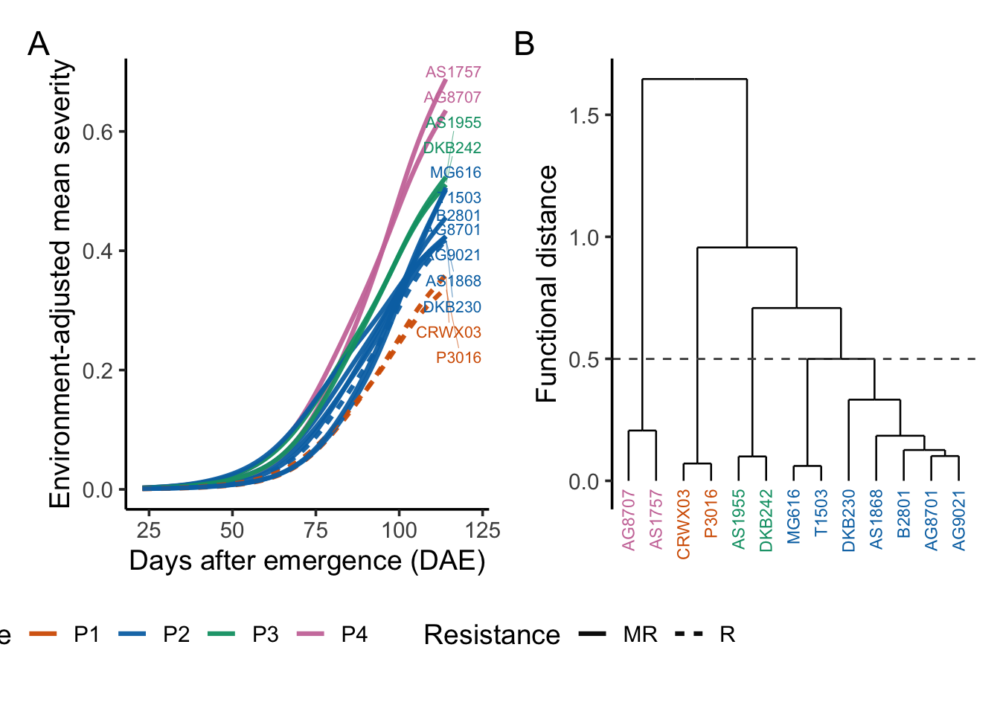
# ggsave("Figure2_functional_phenotypes.png", fig_final, width = 12, height = 5.5, dpi = 300)11 Scalar-equivalent but trajectory-distinct curves
We select two individual curves (by curve_id) that are close in scalar space (AUDPC + final severity) but have large functional distance on a common grid.
11.1 Select candidate pairs (scalar-nearest) and maximize functional distance
dfS <- curve_stats %>%
transmute(
curve_id = as.character(curve_id),
AUDPC = as.numeric(AUDPC),
final_sev = as.numeric(final_sev)
) %>%
filter(is.finite(AUDPC), is.finite(final_sev)) %>%
distinct(curve_id, .keep_all = TRUE) %>%
mutate(
AUDPC_z = as.numeric(scale(AUDPC)),
final_z = as.numeric(scale(final_sev))
)
pairs_scalar <- crossing(
dfS %>% rename_with(~ paste0(.x, ".x"), -curve_id) %>% rename(curve_id.x = curve_id),
dfS %>% rename_with(~ paste0(.x, ".y"), -curve_id) %>% rename(curve_id.y = curve_id)
) %>%
filter(curve_id.x < curve_id.y) %>%
mutate(
scalar_dist = sqrt((AUDPC_z.x - AUDPC_z.y)^2 +
(final_z.x - final_z.y)^2)
) %>%
arrange(scalar_dist)
thr <- quantile(pairs_scalar$scalar_dist, 0.03, na.rm = TRUE)
cand <- pairs_scalar %>% filter(scalar_dist <= thr)
interp_curve <- function(id){
df <- dat %>% filter(as.character(curve_id) == id) %>% arrange(DAE)
approx(df$DAE, df$y, xout = t_grid, rule = 2)$y
}
dt <- mean(diff(t_grid))
cand2 <- cand %>%
rowwise() %>%
mutate(
func_dist = {
y1 <- interp_curve(curve_id.x)
y2 <- interp_curve(curve_id.y)
sqrt(sum((y1 - y2)^2) * dt)
}
) %>%
ungroup()
best <- cand2 %>%
arrange(desc(func_dist), scalar_dist) %>%
slice(1)
id1 <- best$curve_id.x
id2 <- best$curve_id.y
best# A tibble: 1 × 12
curve_id.x AUDPC.x final_sev.x AUDPC_z.x final_z.x curve_id.y AUDPC.y
<chr> <dbl> <dbl> <dbl> <dbl> <chr> <dbl>
1 2024_Arapoti_Prefe… 14.9 0.35 0.439 -0.0673 2024_Cast… 15.6
# ℹ 5 more variables: final_sev.y <dbl>, AUDPC_z.y <dbl>, final_z.y <dbl>,
# scalar_dist <dbl>, func_dist <dbl>11.2 Plot the two raw curves
plot_pair <- dat %>%
filter(as.character(curve_id) %in% c(id1, id2)) %>%
mutate(curve = if_else(as.character(curve_id) == id1, "A", "B"))
s1 <- dfS %>% filter(curve_id == id1)
s2 <- dfS %>% filter(curve_id == id2)
ann <- glue(
"AUDPC A={round(s1$AUDPC,2)} B={round(s2$AUDPC,2)}\n",
"Final A={round(s1$final_sev,2)} B={round(s2$final_sev,2)}\n",
"d_S={signif(best$scalar_dist,3)} d_F={signif(best$func_dist,3)}"
)
y_top <- max(plot_pair$y, na.rm = TRUE) * 1.15
p_main <- ggplot(plot_pair, aes(DAE, y, color = curve)) +
geom_point(alpha = 0.8, size = 2) +
geom_line(linewidth = 1) +
scale_color_grey() +
annotate("label",
x = min(plot_pair$DAE) + 2,
y = y_top - 0.02,
label = ann,
hjust = 0,
size = 4,
fill = "white") +
labs(
x = "Days after emergence (DAE)",
y = "Disease severity (proportion)",
color = "Curve"
) +
coord_cartesian(ylim = c(0, y_top))
p_main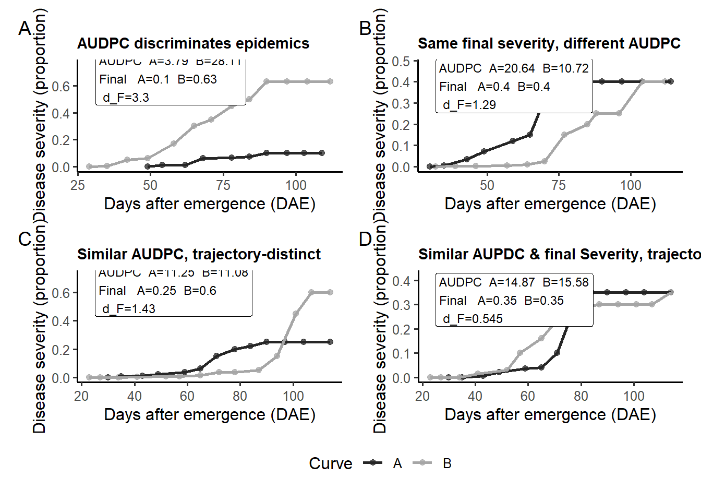
11.3 Difference function \(\Delta(t)\) and its integral contribution
yA <- interp_curve(id1)
yB <- interp_curve(id2)
df_diff <- tibble(
DAE = t_grid,
diff = yA - yB,
sq = (yA - yB)^2
)
dt <- mean(diff(t_grid))
L2_sq <- sum(df_diff$sq) * dt
L2 <- sqrt(L2_sq)
p_diff <- ggplot(df_diff, aes(DAE, diff)) +
geom_hline(yintercept = 0, linewidth = 0.4) +
geom_line(linewidth = 1) +
labs(
x = "Days after emergence (DAE)",
y = expression(Delta(t) == y[A](t) - y[B](t)),
subtitle = paste0("L2 distance = ", signif(L2, 3),
" ( ∫Δ(t)^2 dt = ", signif(L2_sq, 3), " )")
)
p_sq <- ggplot(df_diff, aes(DAE, sq)) +
geom_line(linewidth = 1) +
labs(
x = "Days after emergence (DAE)",
y = expression(Delta(t)^2),
subtitle = "Integral of Δ(t)^2 over time drives the L2 distance"
)
p_diff
p_sq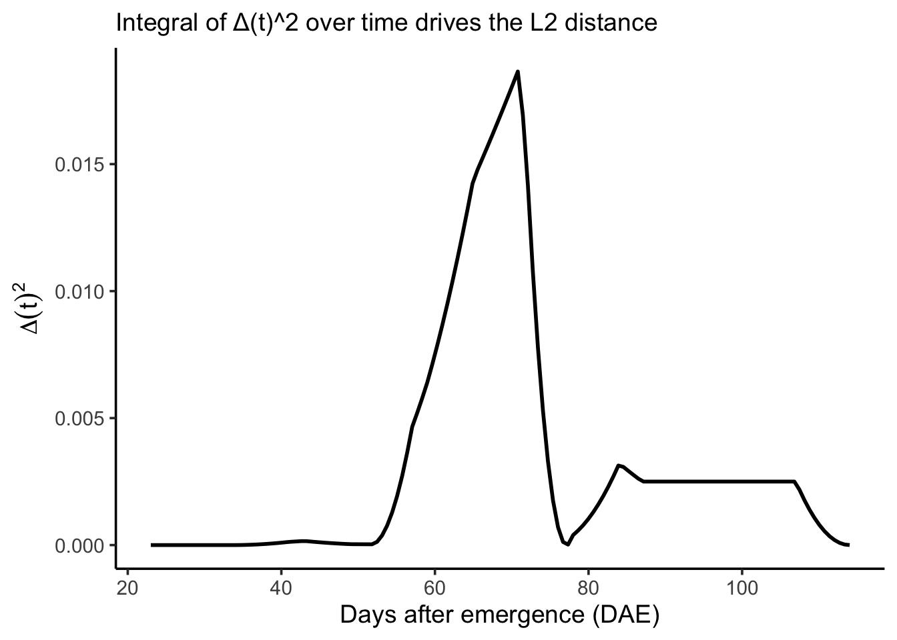
12 Traditional AUDPC analysis (mixed model + Tukey)
Important design note. Your script uses one AUDPC per Hibrido × Ambiente:
audpc_df <- dat %>% group_by(Ambiente, Hibrido) %>% summarise(AUDPC = ..., .groups="drop")This is appropriate if (a) Parcela is not a true replication factor, or (b) you intentionally aggregate within environment. If you do have plot-level replication and want plot-level inference, compute AUDPC by Ambiente × Hibrido × Parcela and fit a corresponding mixed model.
12.1 Compute AUDPC and fit model
audpc_df <- dat %>%
group_by(Ambiente, Hibrido) %>%
summarise(AUDPC = pracma::trapz(DAE, y), .groups = "drop")
audpc_df2 <- audpc_df %>%
mutate(
Ambiente = factor(Ambiente),
Hibrido = factor(Hibrido),
AUDPC = as.numeric(AUDPC)
) %>%
filter(is.finite(AUDPC))
# Mixed model: random intercept for Ambiente (as in your earlier block)
m_audpc <- lmer(AUDPC ~ Hibrido + (1 | Ambiente), data = audpc_df2)
anova(m_audpc)Type III Analysis of Variance Table with Satterthwaite's method
Sum Sq Mean Sq NumDF DenDF F value Pr(>F)
Hibrido 684.75 57.063 12 55.991 5.5711 3.681e-06 ***
---
Signif. codes: 0 '***' 0.001 '**' 0.01 '*' 0.05 '.' 0.1 ' ' 112.2 Model checks (DHARMa)
set.seed(1)
res_a <- simulateResiduals(m_audpc, n = 2000)
plot(res_a)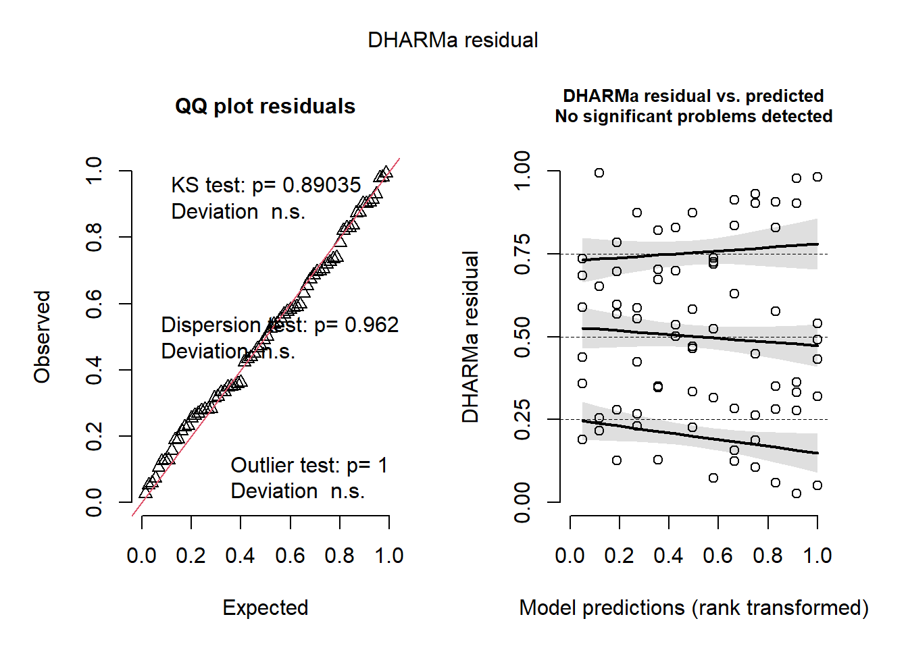
testUniformity(res_a)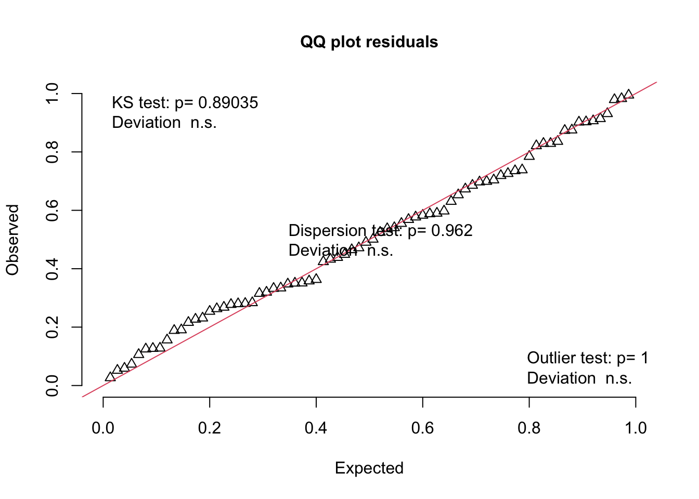
Asymptotic one-sample Kolmogorov-Smirnov test
data: simulationOutput$scaledResiduals
D = 0.067351, p-value = 0.8904
alternative hypothesis: two-sidedtestDispersion(res_a)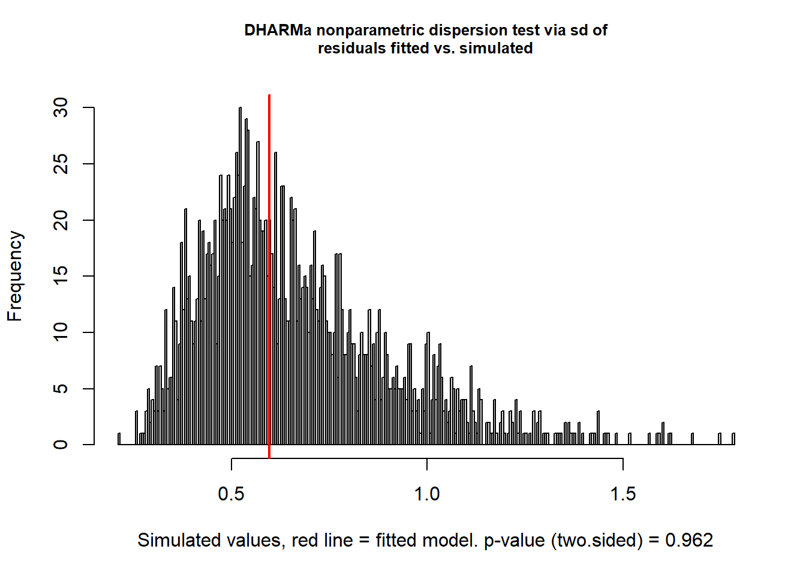
DHARMa nonparametric dispersion test via sd of residuals fitted vs.
simulated
data: simulationOutput
dispersion = 0.90491, p-value = 0.962
alternative hypothesis: two.sidedtestOutliers(res_a)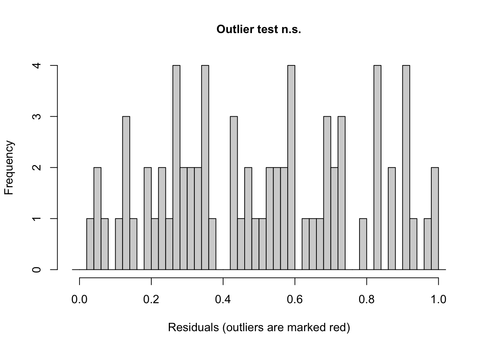
DHARMa outlier test based on exact binomial test with approximate
expectations
data: res_a
outliers at both margin(s) = 0, observations = 74, p-value = 1
alternative hypothesis: true probability of success is not equal to 0.0009995002
95 percent confidence interval:
0.00000000 0.04862762
sample estimates:
frequency of outliers (expected: 0.000999500249875062 )
0 12.3 Hybrid means + Tukey letters
emm_h <- emmeans(m_audpc, ~ Hibrido)
cld_res <- multcomp::cld(
emm_h,
Letters = letters,
adjust = "tukey"
)
audpc_groups <- as.data.frame(cld_res) %>%
transmute(
Hibrido,
emmean,
SE,
df,
lower.CL,
upper.CL,
.group = stringr::str_squish(.group)
) %>%
arrange(emmean)
audpc_groups Hibrido emmean SE df lower.CL upper.CL .group
1 P 3016 VYHR 8.078767 2.001389 13.00413 1.0806978 15.07684 a
2 CRWX03 8.124162 2.221715 18.63419 0.8172663 15.43106 ab
3 MG 616 PWU 9.714700 2.001389 13.00413 2.7166311 16.71277 ab
4 T 1503 PWU 9.967308 2.001389 13.00413 2.9692394 16.96538 ab
5 AS 1868 PRO4 10.275675 2.001389 13.00413 3.2776061 17.27374 ab
6 B 2801 PWU 11.039174 2.221715 18.63419 3.7322788 18.34607 abcd
7 AG 8701 PRO4 11.048208 2.001389 13.00413 4.0501394 18.04628 abc
8 AG 9021 PRO3 12.287733 2.001389 13.00413 5.2896644 19.28580 abcd
9 DKB 230 PRO3 13.911767 2.001389 13.00413 6.9136978 20.90984 abcd
10 DKB 242 PRO4 14.184983 2.001389 13.00413 7.1869144 21.18305 abcd
11 AS 1955 PRO4 15.084983 2.001389 13.00413 8.0869144 22.08305 bcd
12 AS 1757 PRO4 17.016708 2.001389 13.00413 10.0186394 24.01478 cd
13 AG 8707 PRO4 17.799042 2.001389 13.00413 10.8009728 24.79711 d12.4 Merge Tukey groups with functional clusters
final_compare <- audpc_groups %>%
left_join(
cluster_table2 %>% select(Hibrido, cluster, phenotype),
by = "Hibrido"
) %>%
arrange(emmean)
final_compare Hibrido emmean SE df lower.CL upper.CL .group cluster
1 P 3016 VYHR 8.078767 2.001389 13.00413 1.0806978 15.07684 a 1
2 CRWX03 8.124162 2.221715 18.63419 0.8172663 15.43106 ab 1
3 MG 616 PWU 9.714700 2.001389 13.00413 2.7166311 16.71277 ab 2
4 T 1503 PWU 9.967308 2.001389 13.00413 2.9692394 16.96538 ab 2
5 AS 1868 PRO4 10.275675 2.001389 13.00413 3.2776061 17.27374 ab 2
6 B 2801 PWU 11.039174 2.221715 18.63419 3.7322788 18.34607 abcd 2
7 AG 8701 PRO4 11.048208 2.001389 13.00413 4.0501394 18.04628 abc 2
8 AG 9021 PRO3 12.287733 2.001389 13.00413 5.2896644 19.28580 abcd 2
9 DKB 230 PRO3 13.911767 2.001389 13.00413 6.9136978 20.90984 abcd 2
10 DKB 242 PRO4 14.184983 2.001389 13.00413 7.1869144 21.18305 abcd 3
11 AS 1955 PRO4 15.084983 2.001389 13.00413 8.0869144 22.08305 bcd 3
12 AS 1757 PRO4 17.016708 2.001389 13.00413 10.0186394 24.01478 cd 4
13 AG 8707 PRO4 17.799042 2.001389 13.00413 10.8009728 24.79711 d 4
phenotype
1 P1
2 P1
3 P2
4 P2
5 P2
6 P2
7 P2
8 P2
9 P2
10 P3
11 P3
12 P4
13 P412.5 Plot: AUDPC means, CI, Tukey letters (colored by functional phenotype)
plot_df <- final_compare %>%
mutate(
hybrid_short = shorten_hybrid(Hibrido),
cluster = factor(cluster)
)
cols <- c("#D55E00", "#0072B2", "#009E73", "#CC79A7")[1:k_clusters]
ggplot(plot_df,
aes(y = reorder(hybrid_short, emmean),
x = emmean,
color = cluster)) +
geom_point(size = 3) +
scale_color_manual(values = cols) +
geom_errorbarh(aes(xmin = lower.CL, xmax = upper.CL), height = 0.12) +
geom_text(aes(label = .group), hjust = 0, vjust = -1, size = 4, color = "black") +
labs(
x = "AUDPC",
y = "Hybrid",
color = "Functional phenotype",
title = NULL
) +
theme(legend.position = "bottom") +
coord_cartesian(xlim = c(min(plot_df$lower.CL), max(plot_df$upper.CL) * 1.10))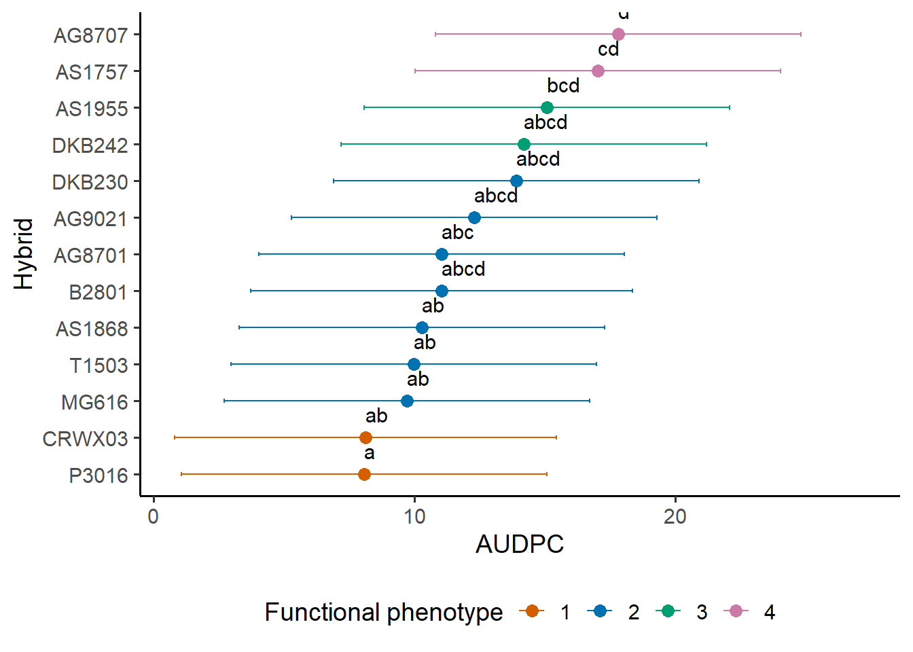
13 Optional: run compare_curves() from {r4pde}
This section reproduces your final call, assuming {r4pde} is installed and your dat object matches the required schema.
#pak::pkg_install("emdelponte/r4pde")
library(r4pde)
m1 <- compare_curves(
data = dat,
time = "DAE",
response = "y",
treatment = "Hibrido",
environment = "Ambiente",
test_factor = "resistance",
perm_unit = "Hibrido",
perm_strata = "Ambiente",
test_mode = "global",
bootstrap = TRUE,
boot_B = 399
)
m1
plot(m1)
plot_curves(m1)
plot_dendrogram(m1)14 Session info
sessionInfo()R version 4.4.0 (2024-04-24)
Platform: aarch64-apple-darwin20
Running under: macOS 15.6.1
Matrix products: default
BLAS: /Library/Frameworks/R.framework/Versions/4.4-arm64/Resources/lib/libRblas.0.dylib
LAPACK: /Library/Frameworks/R.framework/Versions/4.4-arm64/Resources/lib/libRlapack.dylib; LAPACK version 3.12.0
locale:
[1] en_US.UTF-8/en_US.UTF-8/en_US.UTF-8/C/en_US.UTF-8/en_US.UTF-8
time zone: America/Sao_Paulo
tzcode source: internal
attached base packages:
[1] stats graphics grDevices utils datasets methods base
other attached packages:
[1] glue_1.8.0 stringr_1.5.1 DHARMa_0.4.7
[4] patchwork_1.3.0 ggdendro_0.2.0 ggrepel_0.9.6
[7] cowplot_1.1.3 multcompView_0.1-10 emmeans_2.0.0
[10] lmerTest_3.1-3 lme4_1.1-37 Matrix_1.7-1
[13] pheatmap_1.0.13 pracma_2.4.4 mgcv_1.9-1
[16] nlme_3.1-166 ggplot2_3.5.2 purrr_1.0.4
[19] tibble_3.3.0 tidyr_1.3.1 dplyr_1.1.4
[22] readr_2.1.5
loaded via a namespace (and not attached):
[1] tidyselect_1.2.1 farver_2.1.2 fastmap_1.2.0
[4] TH.data_1.1-2 promises_1.3.2 digest_0.6.37
[7] mime_0.13 estimability_1.5.1 lifecycle_1.0.4
[10] survival_3.7-0 magrittr_2.0.3 compiler_4.4.0
[13] rlang_1.1.6 tools_4.4.0 utf8_1.2.6
[16] yaml_2.3.10 knitr_1.49 labeling_0.4.3
[19] htmlwidgets_1.6.4 bit_4.6.0 plyr_1.8.9
[22] RColorBrewer_1.1-3 gap.datasets_0.0.6 multcomp_1.4-26
[25] withr_3.0.2 numDeriv_2016.8-1.1 grid_4.4.0
[28] xtable_1.8-4 iterators_1.0.14 scales_1.4.0
[31] MASS_7.3-61 dichromat_2.0-0.1 cli_3.6.5
[34] mvtnorm_1.3-2 rmarkdown_2.29 crayon_1.5.3
[37] reformulas_0.4.1 generics_0.1.4 rstudioapi_0.17.1
[40] tzdb_0.5.0 minqa_1.2.8 splines_4.4.0
[43] parallel_4.4.0 vctrs_0.6.5 boot_1.3-31
[46] sandwich_3.1-1 jsonlite_2.0.0 hms_1.1.3
[49] pbkrtest_0.5.4 bit64_4.6.0-1 qgam_1.3.4
[52] foreach_1.5.2 gap_1.6 nloptr_2.2.1
[55] codetools_0.2-20 stringi_1.8.7 gtable_0.3.6
[58] later_1.4.1 pillar_1.10.2 htmltools_0.5.8.1
[61] R6_2.6.1 Rdpack_2.6.4 doParallel_1.0.17
[64] shiny_1.10.0 vroom_1.6.5 evaluate_1.0.1
[67] lattice_0.22-6 backports_1.5.0 rbibutils_2.3
[70] broom_1.0.8 httpuv_1.6.15 Rcpp_1.0.14
[73] coda_0.19-4.1 xfun_0.49 zoo_1.8-12
[76] pkgconfig_2.0.3